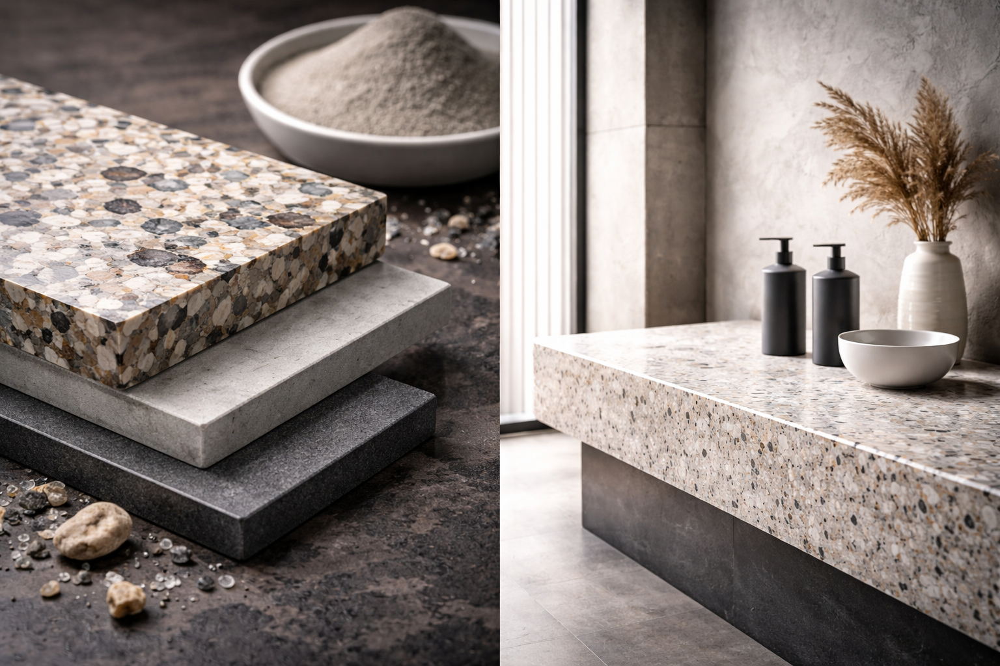
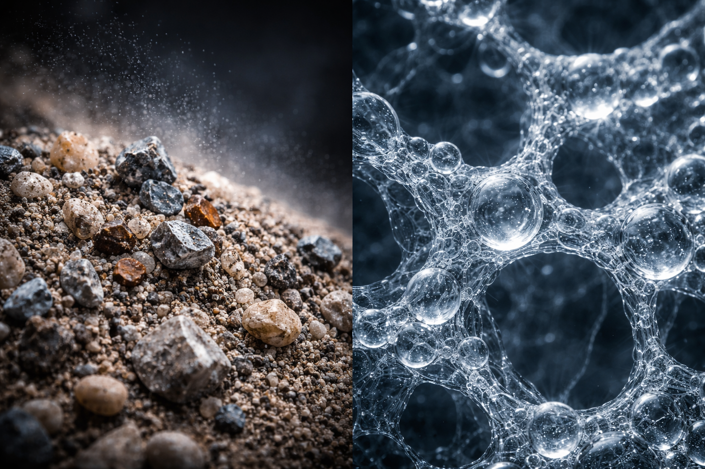
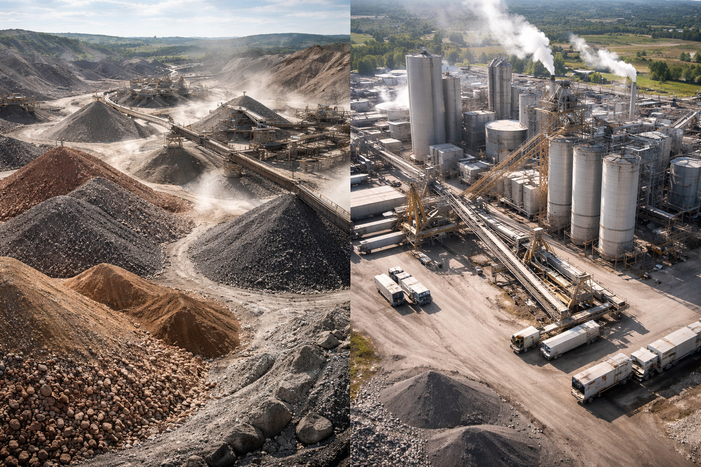
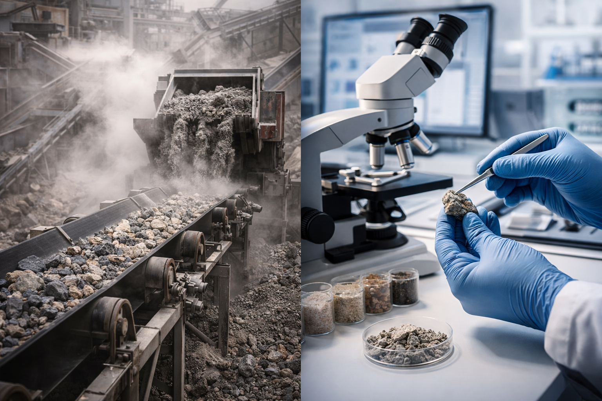

Large underused streams
Tailings, slags, soils, and fines are available at scale.





Mineral Activation Labs helps Australian industry assess tailings, slags, clay-rich soils, quarry fines, and mineral residues and identify realistic pathways into construction materials.
Tailings, slags, soils, and fines are available at scale.
Waste, emissions, and landfill costs are rising.
Projects often stall when the pathway is still unclear.
A material succeeds when matched to the right use.
Assess whether the material is worth pursuing and where the main constraints are likely to sit.
Identify the most realistic route into construction materials or related mineral-based products.
Turn scattered information into a practical decision: deeper testing, pilot preparation, or no-go.
Identify where the strongest value may sit across different material and product pathways.
Highlight where technical, processing, or market risks may limit the pathway before more work is committed.
Help shape the most useful next tests and decisions before broader development begins.
We help clients make earlier, better decisions on mineral side-stream opportunities — before time and budget are wasted on the wrong pathway.
Built around the feedstocks, industries, and practical constraints that matter in the Australian market.
Focused on whether a pathway is worth developing, not just whether it is technically interesting.
Strong understanding of mineral feedstocks, construction materials, and low-carbon material pathways.
Helps turn uncertainty into sharper decisions on next steps, priorities, and realistic opportunities.
If you are evaluating tailings, slag, clay-rich material, quarry fines, or other mineral residues, the goal is to determine whether the opportunity is worth developing and what the most realistic next step looks like.